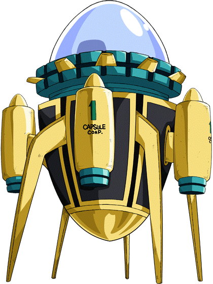

Hyperblog
Tu blog maestro de confianza
Este es el titulo actractivo e interesante del post
Este es el párrafo de inicio donde aplicaremos las cosas increíbles que se puedes hacer con las ramas

Los blog son la mejor forma de compartir tus ideas. Mucho mas que ir a conferencias o ver videos en Youtube.
creando conflictos en las ramas
Felipe Estrada